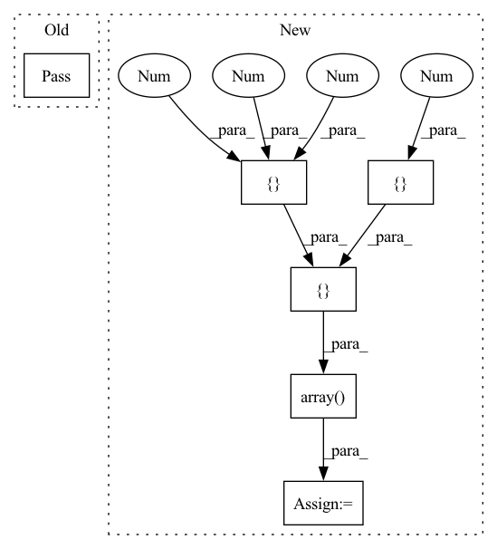

Pattern ID :5513
Before Change
npt.assert_almost_equal(actual_output, expected_output)
def test_crop_and_resize(self):
pass
After Change
test_img = create_image((720, 480))
test_bboxes = projected_bbox_arr
test_out_size = (256, 192)
expected_output = np.array([ [[ 0.56171875, 0 , 288.1[0.0 , 0.49895833 , 192.1 ]],
[[2.80859375, 0.0, -359.0],
[0.0, 0.49895833, 192.1]],
[[0.56171875, 0.0, 288.1],
[0.0, 2.49479167, -239.0]])
_, actual_output = crop_and_resize(test_img, test_bboxes, test_out_size)
npt.assert_almost_equal(actual_output, expected_output)
In pattern: SUPERPATTERN
Frequency: 3
Non-data size: 6
Instances Fragment ID: 19382567
Project Name: aimakerspace/peekingduck
Commit Name: 18625baf3c5add75d7d520def40f81050f1baa95
Time: 2021-06-22
Author: nzahin_95@hotmail.com
File Name: tests/pipeline/nodes/model/hrnetv1/test_preprocessing.py
M Class Name: TestPreprocessing
N Class Name: TestPreprocessing
M Method Name: test_crop_and_resize(3)
N Method Name: test_crop_and_resize(1)
M Parent Class:
N Parent Class:
M File Name: tests/pipeline/nodes/model/hrnetv1/test_preprocessing.py
N File Name: tests/pipeline/nodes/model/hrnetv1/test_preprocessing.py
M Start Line: 51
M End Line: 52
N Start Line: 51
N End Line: 63
Before Change
show_samples=True
)
except:
pass
// If they exist, plot all our loose input constraints (i.e., our one-step backprojection set estimates)
// TODO: Make plotting these optional via a flag
for info in kwargs.get("per_timestep", []):After Change
import numpy as np
import nn_closed_loop.constraints as constraints
x0 = np.array(
[ // (num_inputs, 2)
[-5.5 , -4.5 ], // x0min, x0max
[-0.5 , 0.5 ]
)
// x0 = np.array( // tree_trunks_vs_quadrotor_12__
// [ // (num_inputs, 2)
// [-6.5,-0.25, 2, 1.95, -0.01, -0.01],
// [-6, 0.25, 2.5, 2.0, 0.01, 0.01],
// ]
// ).T
// x0 = np.array(
// [ // (num_inputs, 2)
// [-0.5, 0.5],
// [-0.5, 0.5],
// [-0.01, 0.01],
// [-0.01, 0.01],
// ]
// )
// x0 = np.array(
// [ // (num_inputs, 2)
// [-2-0.25, -4+0.25], // x0min, x0max
// [-3., 3.], // x1min, x1max
// [0.49, 0.50],
// [-0.01, 0.01]
// ]
// )
x0_constraint = constraints.LpConstraint(
range=x0, p=np.inf
)
input_dims = [x["dim"] for x in inputs_to_highlight]
self.dynamics.show_trajectories(
len(input_constraints) * self.dynamics.dt,
x0_constraint,
input_dims=input_dims,
ax=self.partitioner.animate_axes,
controller=self.propagator.network,
zorder=10
)
// initial_range = np.array( // tree_trunks_vs_quadrotor_12__
// [ // (num_inputs, 2)
// [-6.5, 0.25-0.25, 2, .95, -0.01, -0.01],
// [-6, 0.25+0.25, 2.5, 1.0, 0.01, 0.01],
// ]
// ).T
initial_constraint = constraints.LpConstraint(x0)
self.partitioner.plot_reachable_sets(
initial_constraint,
input_dims, Fragment ID: 19382615
Project Name: mit-acl/nn_robustness_analysis
Commit Name: aed9f9b4eef5ac9826f2323736ec43eddc8ef5df
Time: 2022-04-01
Author: nrober1122@gmail.com
File Name: nn_closed_loop/nn_closed_loop/analyzers/ClosedLoopBackwardAnalyzer.py
M Class Name: ClosedLoopBackwardAnalyzer
N Class Name: ClosedLoopBackwardAnalyzer
M Method Name: visualize_single_set(10)
N Method Name: visualize_single_set(10)
M Parent Class: analyzers.Analyzer
N Parent Class: analyzers.Analyzer
M File Name: nn_closed_loop/nn_closed_loop/analyzers/ClosedLoopBackwardAnalyzer.py
N File Name: nn_closed_loop/nn_closed_loop/analyzers/ClosedLoopBackwardAnalyzer.py
M Start Line: 218
M End Line: 280
N Start Line: 200
N End Line: 326
Before Change
linestyle="--",
)
except:
pass
// import pdb; pdb.set_trace()
self.plot_target_set(
backproj_overapprox,
color="tab:blue",After Change
)
import nn_closed_loop.constraints as constraints
x0 = np.array(
[ // (num_inputs, 2)
[-5.5 , -5.0 ], // x0min, x0max
[-0.5 , 0.5 ]
)
x0_constraint = constraints.LpConstraint(
range=x0, p=np.inf
)
self.dynamics.show_trajectories( Fragment ID: 19383200
Project Name: mit-acl/nn_robustness_analysis
Commit Name: 411481973517f03f63eefbf578ca75c9500cdb2d
Time: 2022-02-22
Author: nrober@mit.edu
File Name: nn_closed_loop/nn_closed_loop/analyzers/ClosedLoopBackwardAnalyzer.py
M Class Name: ClosedLoopBackwardAnalyzer
N Class Name: ClosedLoopBackwardAnalyzer
M Method Name: visualize(9)
N Method Name: visualize(9)
M Parent Class: analyzers.Analyzer
N Parent Class: analyzers.Analyzer
M File Name: nn_closed_loop/nn_closed_loop/analyzers/ClosedLoopBackwardAnalyzer.py
N File Name: nn_closed_loop/nn_closed_loop/analyzers/ClosedLoopBackwardAnalyzer.py
M Start Line: 130
M End Line: 150
N Start Line: 161
N End Line: 208